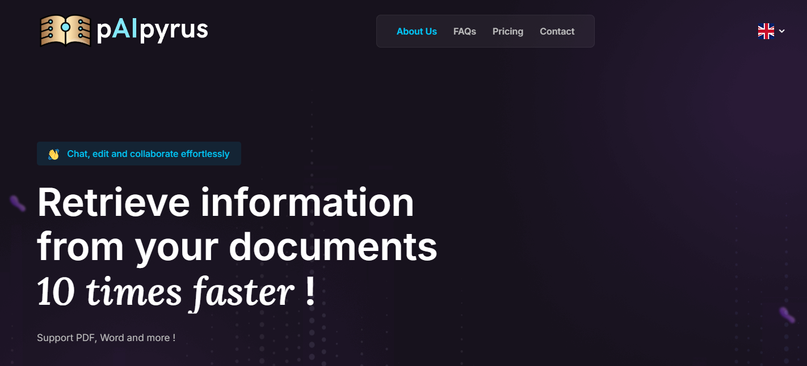

Custom Websites for Your Needs
I create high-quality, responsive websites tailored to your business. Let me bring your vision to life.
I create high-quality, responsive websites tailored to your business. Let me bring your vision to life.